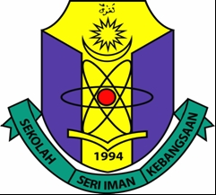

EDUCATION

| My kindergaden school life begun when i was 6 years old in 2007. The school is Pasti Adam Mak Chili Kemaman Terengganu. |

| My primary school life begun when i was 7 years old. The school is Sekolah Kebangsaan Seri Iman Kemaman, Terengganu. I achieved a perfect score on the UPSR for standard 6. |

| Then I went to secondary school, Sekolah Menengah Kebangsaan Sultan Ismail 2 Kemaman, Terengganu. I managed to get an excellent performance in PT3 in Form 3 and continue in Form 4 at the same school. Again, I did well in SPM, and I was offered to enter UITM Dungun, Terengganu, in 2019, but I turned it down. |

| After that,I continued my study in STPM at Smk Sultan Ismail Kemaman, Terengganu, and I got excellent results in STPM. |

| Then I was accepted to continue my studies at Uitm Machang, Kelantan in 2022. Now, I'm a 1st-year student in the Bachelor of Information Science, Information Management. |
Copyright © 2022 Noor Ellyana Fazlin Official Website. |
| All Rights Reserved. |
| Last Updated 11 January 2023. |